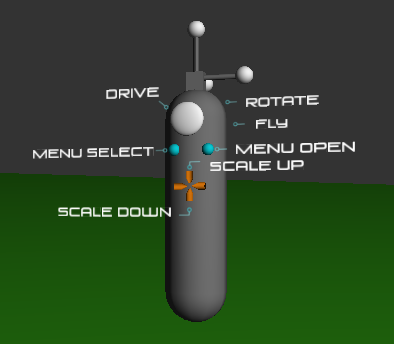

Wandaid is a python module for Omegalib that provides a form of tool-tip for the CAVE2's wand. Whenever you raise your wand above a certain height (default is 1.5 meters) Wandaid will kick in and show a virtual wand with labels on it to explain what the buttons do. An application can customize the labels by using the Wandaid API.

The demo.py file
contains an example of how to use the wandaid API. Run it as you
would any Omegalib application. Use this example to incorporate
wandaid into your own applications. One thing to keep in mind
when using wandaid is that in addition to the wandaid.py file
you will also need to grab the resources-wandaid
directory. This contains all the 3D model files and texture maps
used by wandaid.
If for some reason the
fonts are not correctly shown, you may need to have the
following environment variable set in your .bashrc or .tcshrc
file:
export OSG_LIBRARY_PATH=/data/evl/omegalib-user/build/bin/osgPlugins-3.0.1
or:
setenv OSG_LIBRARY_PATH /data/evl/omegalib-user/build/bin/osgPlugins-3.0.1
Documentation on the
API can be found HERE.